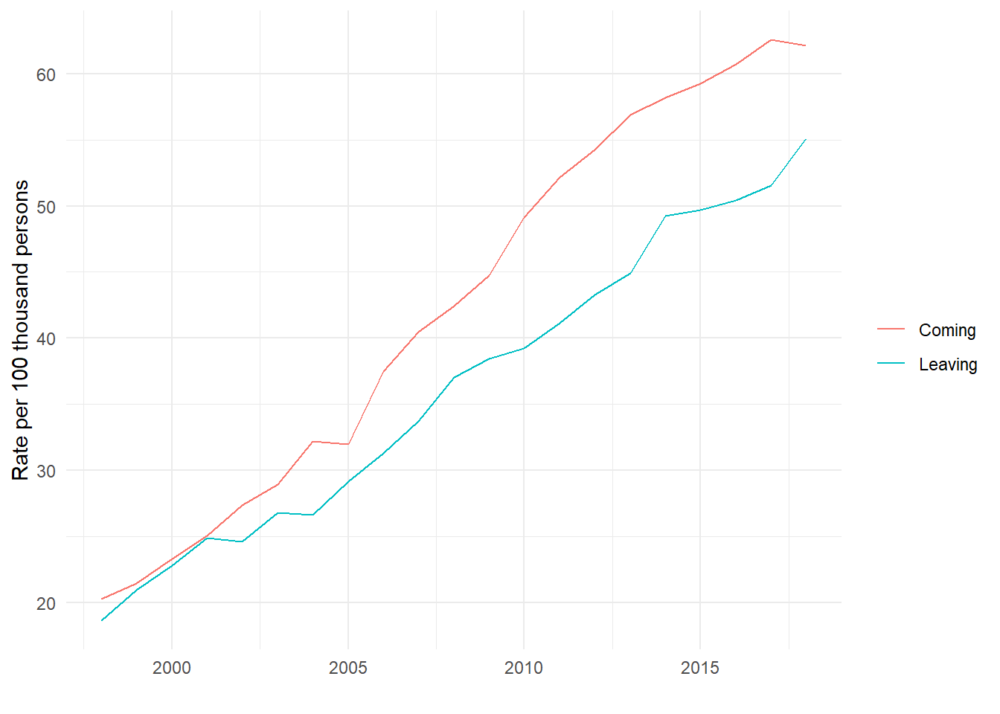
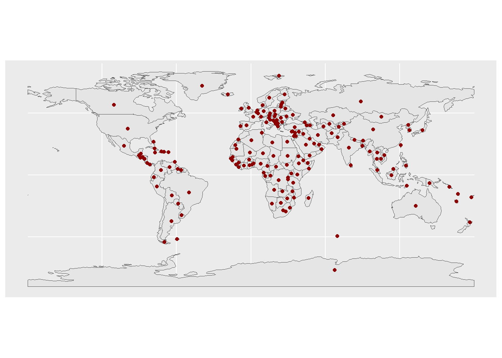

data <- read.csv("data_processed/openalex_2024_V1_scholarlymigration_countryflows_enriched.csv")scholar_migration
Global Flows and Rates of International Migration of Scholars
First we load the data:
Now we can explore some of its features:
glimpse(data) Rows: 107,710
Columns: 16
$ n_migrations <int> 30, 10, 3360, 4554, 16, 4, 22, 5136, 387, 146, 751,…
$ year <dbl> 2003, 2008, 2014, 2006, 2014, 2013, 1998, 2009, 200…
$ countrynamefrom <chr> "Spain", "United States", "United States", "United …
$ countrynameto <chr> "China", "Bolivia", "Canada", "United States", "Ita…
$ regionfrom <chr> "Europe & Central Asia", "North America", "North Am…
$ regionto <chr> "East Asia & Pacific", "Latin America & Caribbean "…
$ incomelevelfrom <chr> "HIC", "HIC", "HIC", "HIC", "LMC", "HIC", "HIC", "U…
$ incomelevelto <chr> "UMC", "LMC", "HIC", "HIC", "HIC", "LMC", "HIC", "H…
$ gdp_per_capitafrom <dbl> 21510.836, 48570.046, 55123.850, 44536.620, 4398.57…
$ gdp_per_capitato <dbl> 1288.6433, 1687.5834, 50955.9983, 46302.0009, 35565…
$ populationfrom <dbl> 42187645, 304093966, 318386329, 60846820, 11428948,…
$ populationto <dbl> 1288400000, 9880593, 35437435, 298379912, 60789140,…
$ iso3codefrom <chr> "ESP", "USA", "USA", "GBR", "TUN", "FIN", "DEU", "C…
$ iso3codeto <chr> "CHN", "BOL", "CAN", "USA", "ITA", "BGD", "NOR", "U…
$ paddedpopfrom <int> 98067, 974303, 1169891, 202416, 15733, 30850, 13386…
$ paddedpopto <int> 256586, 447, 157838, 903561, 195954, 9860, 10704, 1…This dataset contains aggregate information on migration of scholar for different countries. The main feature is the number of migrations n_migrations, but there are multiple variables that can enrich the analysis, such as the year of migration, the countries involved and their respective income and population.
Now we can visualize the countries with the highest migration rate in 2018, i.e., those with more migrant scholars per 100 thousand persons.
data_2018 <- data |> filter(year == 2018)
emigration_country <- data_2018 |>
group_by(countrynamefrom, year) |>
summarise(n_migrations = sum(n_migrations), populationfrom = mean(populationfrom))`summarise()` has grouped output by 'countrynamefrom'. You can override using
the `.groups` argument.emigration_country |>
mutate(migration_rate = n_migrations*100000/populationfrom) |>
arrange(-migration_rate) |>
head(10)# A tibble: 10 × 5
# Groups: countrynamefrom [10]
countrynamefrom year n_migrations populationfrom migration_rate
<chr> <dbl> <int> <dbl> <dbl>
1 British Virgin Islands 2018 38 30335 125.
2 Switzerland 2018 4692 8514329 55.1
3 Antigua and Barbuda 2018 48 91626 52.4
4 Singapore 2018 2380 5638676 42.2
5 Ireland 2018 1992 4867316 40.9
6 Australia 2018 8498 24966643 34.0
7 Luxembourg 2018 205 607950 33.7
8 New Zealand 2018 1604 4900600 32.7
9 Denmark 2018 1743 5793636 30.1
10 United Kingdom 2018 19907 66460344 30.0This might be due to small populations, so we can also visualize this in absolute terms instead of relative:
emigration_country |>
arrange(-n_migrations) |>
head(10)# A tibble: 10 × 4
# Groups: countrynamefrom [10]
countrynamefrom year n_migrations populationfrom
<chr> <dbl> <int> <dbl>
1 United States 2018 49105 326838199
2 United Kingdom 2018 19907 66460344
3 China 2018 11821 1402760000
4 Germany 2018 11729 82905782
5 Canada 2018 9948 37065084
6 France 2018 9537 67158348
7 Australia 2018 8498 24966643
8 Spain 2018 8456 46797754
9 India 2018 8447 1369003306
10 Brazil 2018 6627 210166592Or maybe take into account countries with more than 500 thousand persons:
emigration_country |>
filter(populationfrom>500000) |>
mutate(migration_rate = n_migrations*100000/populationfrom) |>
arrange(-migration_rate) |>
head(10)# A tibble: 10 × 5
# Groups: countrynamefrom [10]
countrynamefrom year n_migrations populationfrom migration_rate
<chr> <dbl> <int> <dbl> <dbl>
1 Switzerland 2018 4692 8514329 55.1
2 Singapore 2018 2380 5638676 42.2
3 Ireland 2018 1992 4867316 40.9
4 Australia 2018 8498 24966643 34.0
5 Luxembourg 2018 205 607950 33.7
6 New Zealand 2018 1604 4900600 32.7
7 Denmark 2018 1743 5793636 30.1
8 United Kingdom 2018 19907 66460344 30.0
9 Canada 2018 9948 37065084 26.8
10 Sweden 2018 2678 10175214 26.3We can also see the countries with more immigration for that same year:
immigration_country_year <- data_2018 |>
group_by(countrynameto, year) |>
summarise(n_migrations = sum(n_migrations), populationto = mean(populationto))`summarise()` has grouped output by 'countrynameto'. You can override using the
`.groups` argument.immigration_country_year |>
filter(populationto>500000) |>
mutate(migration_rate = n_migrations*100000/populationto) |>
arrange(-migration_rate) |>
head(10)# A tibble: 10 × 5
# Groups: countrynameto [10]
countrynameto year n_migrations populationto migration_rate
<chr> <dbl> <int> <dbl> <dbl>
1 Switzerland 2018 5290 8514329 62.1
2 Luxembourg 2018 282 607950 46.4
3 Ireland 2018 2073 4867316 42.6
4 Singapore 2018 2223 5638676 39.4
5 Australia 2018 8778 24966643 35.2
6 Denmark 2018 1924 5793636 33.2
7 New Zealand 2018 1593 4900600 32.5
8 United Kingdom 2018 19656 66460344 29.6
9 Sweden 2018 2956 10175214 29.1
10 Norway 2018 1446 5311916 27.2It seems that Switzerland has a high immigration and emigration rate of scholars. We can see how this has developed over time:
data_sw_emi <- data |> filter(countrynamefrom == "Switzerland") |>
group_by(year) |>
summarise(migration = sum(n_migrations),
population = mean(populationfrom),
rate = migration*100000/population)
data_sw_immi <- data |> filter(countrynameto == "Switzerland") |>
group_by(year) |>
summarise(migration = sum(n_migrations),
population = mean(populationto),
rate = migration*100000/population)
ggplot()+
geom_line(aes(year, rate, color = "Leaving"), data = data_sw_emi)+
geom_line(aes(year, rate, color = "Coming"), data = data_sw_immi)+
labs(x = "", y = "Rate per 100 thousand persons", color = "")+
theme_minimal()
Spatial visualization:
library(sf)Linking to GEOS 3.13.1, GDAL 3.11.0, PROJ 9.6.0; sf_use_s2() is TRUElibrary(spData)To access larger datasets in this package, install the spDataLarge
package with: `install.packages('spDataLarge',
repos='https://nowosad.github.io/drat/', type='source')`library(countrycode)
library(flowmapblue)
library(flowmapper)
library(tidyverse)── Attaching core tidyverse packages ──────────────────────── tidyverse 2.0.0 ──
✔ forcats 1.0.0 ✔ stringr 1.5.1
✔ lubridate 1.9.4 ✔ tibble 3.3.0
✔ purrr 1.1.0 ✔ tidyr 1.3.1
✔ readr 2.1.5 ── Conflicts ────────────────────────────────────────── tidyverse_conflicts() ──
✖ dplyr::filter() masks stats::filter()
✖ dplyr::lag() masks stats::lag()
ℹ Use the conflicted package (<http://conflicted.r-lib.org/>) to force all conflicts to become errorscountries <- spData::world
ggplot() +
geom_sf(data = countries) +
geom_sf(data = st_point_on_surface(countries), color = "darkred")Warning: st_point_on_surface assumes attributes are constant over geometriesWarning in st_point_on_surface.sfc(st_geometry(x)): st_point_on_surface may not
give correct results for longitude/latitude data
countries_centroids <- countries |>
st_centroid() |> # finds a center of each country'spolygon
st_coordinates() |> # extracts numeric coorindates from the POINT geometry
as.data.frame() |> # converts the matrix to a data.frame
setNames(c("lon", "lat")) |> # renames the columns
cbind(countries) |> # adds back all the columns (except for geometry) form `countries`
select(iso_a2, lon, lat, name_long) # only selects a few columns that we really needWarning: st_centroid assumes attributes are constant over geometriesglimpse(countries_centroids)Rows: 177
Columns: 4
$ iso_a2 <chr> "FJ", "TZ", "EH", "CA", "US", "KZ", "UZ", "PG", "ID", "AR", …
$ lon <dbl> 178.56842, 34.74198, -12.18574, -96.39551, -103.57290, 67.23…
$ lat <dbl> -17.3156217, -6.2505643, 24.2783849, 60.4767578, 44.7559814,…
$ name_long <chr> "Fiji", "Tanzania", "Western Sahara", "Canada", "United Stat…